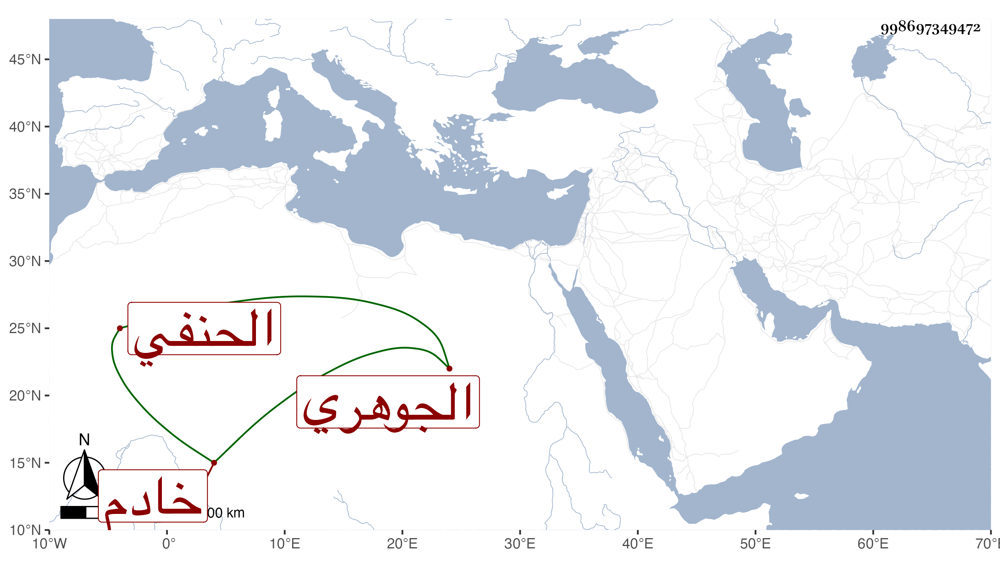

0902Sakhawi.DawLamic.ITO20230111-ara1.EIS1600.998697349472
Biography ID: 998697349472
541
أحمد بن محمد بن عز الدين محمد الشهاب بن الجلال الجوهري الحنفي خادم البرقوقية . ولد ونشأ في خدمة العضدي الصيرامي وحضر دروسه وناب في القضاء وباشر النقابة عند ابن الشحنة وبسفارته وافق العضدي على تزوج عبد البر بابنته وكان ما علم ، ثم انتمى لسالم العبادي المحتوي على الأمير ازبك الظاهري ولازم خدمته ولم يتفرغ لغيره وعظم اختصاصه به وبأميره وساس الأمور بتؤدة وعقل وحشمة وباطن متسع بحيث حمده غالب أصحابه واستقر شيخ الصوفية بالجامع الأزبكي وحج معه في سنة ثمان وسبعين فكانت الأمور معذوفة به .
